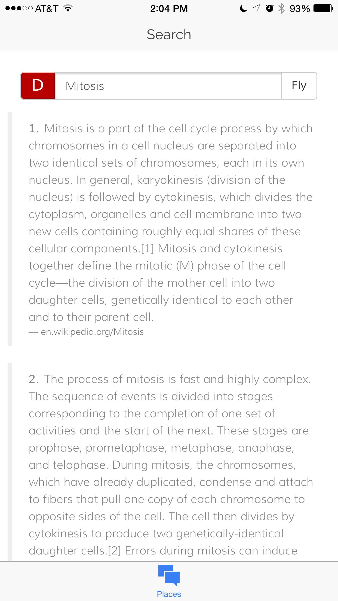
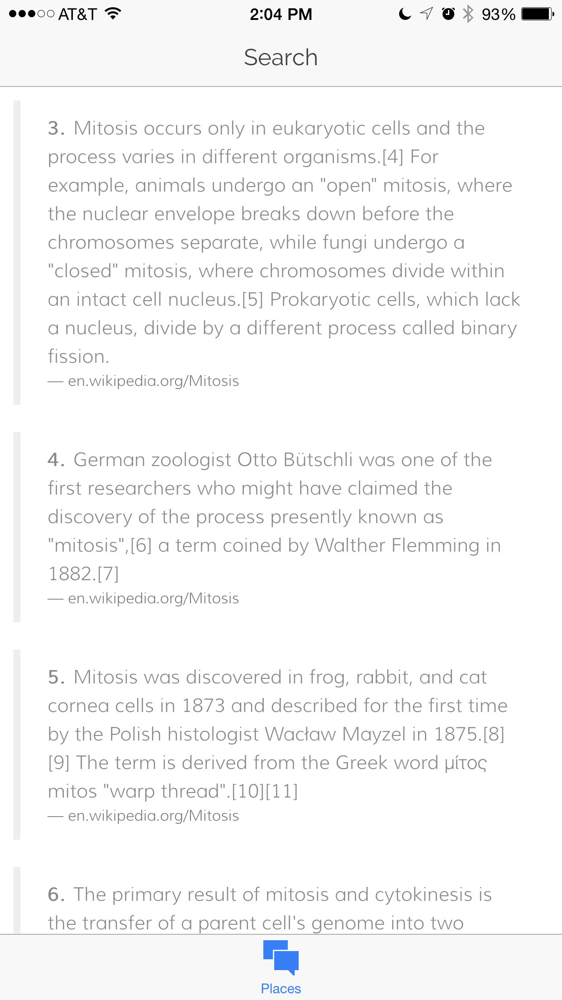
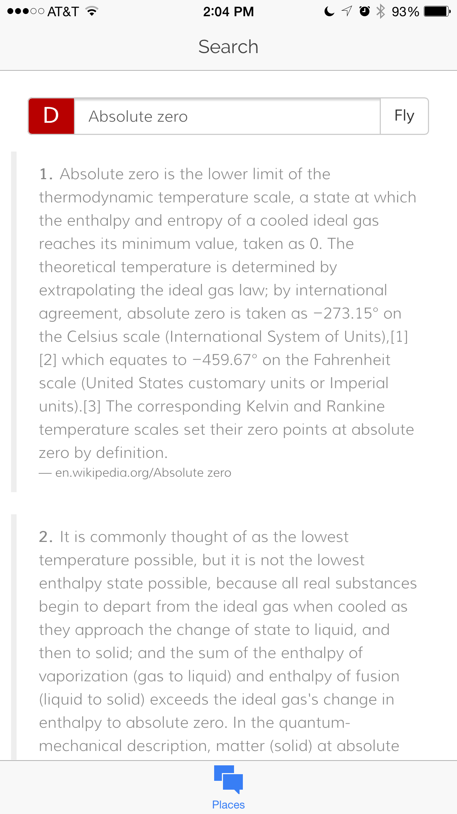

My independent study this semester was formally focusing on a topic called "theoretical computer science." Theoretical computer science means building algorithms instead of things like websites. To learn about algorithms I first started reading the textbook "Introduction To Algorithms." This book helped to provide a basic overview for what I was doing. Though I didn't cover all the chapters, I covered about 70 pages of it and skipped to some of the more applicable lessons for me.
For my project this semester, I wanted to focus on a topic inside of theoretical computer science, called Natural Language Processing, or NLP for short. NLP, also known as computational linguistics (which is a more self explanitory way to say it) is the study of how languages work and how to analyze them. Commonly known products that use NLP include IBM Watson, SIRI, Google, Facebook and any site that depends on the analysis of language.
I choose two projects to focus on this semester. The first was a plagerism app to detect plagerism. Along with some other students I build an alogirhtm to rank the complexity of sentences, and theoretically tell if a sentence is plagerised. The way it works is by assigning numerical values to the words used in the sentences based on how complex they are. We then create a database of students work that has the norms of how complex student's sentences normally are. If a student plagerizes, and the sentences he/she writes are very complex, the algorithm will spot, and mark it to be checked over.
The second project I worked on was adding to a research engine I, along with a team from last year, built called Dragonfly. Dragonfly is a research engine where users search for facts instead of websites, because when you're doing research that's what you need, facts not website. So, we needed to build a search algorithm that can search through and analyze large bodies of text. I ended up building an app to display the results. Below are screen shots of the app.


